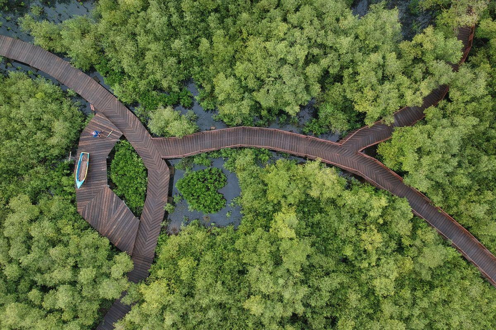
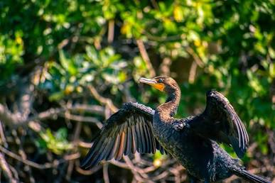

Abrasi & sampah mengubah wajah pantai.
Gelombang, pasang surut, dan sampah yang terbawa aliran dapat menekan habitat pesisir dan mengikis garis pantai.
Menyusuri akar mangrove, mengenal kehidupan pesisir, dan menjaga benteng hijau yang melindungi Surabaya Timur.

Di garis pantai, setiap akar punya peran. Memahami tantangan adalah langkah pertama menjaga ekosistem.
Gelombang, pasang surut, dan sampah yang terbawa aliran dapat menekan habitat pesisir dan mengikis garis pantai.
Akar menahan sedimen, meredam energi gelombang, menyediakan habitat, dan menyimpan karbon biru.
Pilih bagian yang ingin kamu kenali. Setiap unsur punya peran dalam menjaga keseimbangan pesisir.

Jalinan akar membantu menahan sedimen dan meredam energi gelombang. Di sela-selanya, biota kecil menemukan tempat berlindung.
Kenali fungsi mangrove
Kepiting, ikan kecil, moluska, dan burung memanfaatkan kawasan mangrove sebagai bagian dari habitatnya. Mengamati dari jalur yang diizinkan membantu kita menjaga ruang hidup mereka.
Lihat biodiversitas
Ekosistem mangrove menyimpan karbon pada biomassa dan sedimennya. Menjaga habitat tetap sehat berarti ikut merawat salah satu penyangga iklim pesisir.
Coba hitung jejak perjalananJawab tiga pertanyaan singkat seputar mangrove dan etika berkunjung. Satu menit untuk membawa pulang kebiasaan baik.

3 pertanyaanBelajar kecil, dampak berarti.Jadwal dapat berubah; konfirmasikan informasi terbaru kepada pengelola sebelum berangkat.
Periksa kembali jam buka sebelum berkunjung.
Surabaya Timur, Jawa Timur.
Kenali ekosistem pesisir dengan tetap menjaga habitat.
Peta interaktif dengan titik fasilitas untuk membantu merencanakan kunjunganmu.

Masukkan jarak satu arah ke kawasan. Kami hitung estimasi perjalanan pulang-pergi.
*Asumsi 0,12 kg CO₂/km untuk mobil dan 10 kg CO₂/tahun per bibit; angka edukasi, bukan pengukuran resmi. Berbagi kendaraan atau transportasi umum membantu mengurangi emisi.
Tandai persiapanmu. Checklist tersimpan di perangkat ini agar bisa dilanjutkan nanti.
Beberapa kebiasaan sederhana membuat kunjungan lebih nyaman sekaligus ramah habitat.
0 dari 4 langkah siap
Dukung upaya pembibitan dan restorasi melalui aksi yang bertanggung jawab. Setiap kontribusi menumbuhkan kepedulian.
Pilih langkah yang sesuai dengan waktumu. Informasi kegiatan dapat dikonfirmasi langsung kepada pengelola.
Saya, Penjaga Pesisir, memilih merawat
3 bibit mangrove